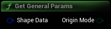

Get parameters that are not shape specific
|
Shape Data
S Dyn Shape Data Structure
|
Dyn Shape Data containing the params for this shape |
|
Origin Mode
EGeometryScriptPrimitiveOriginMode Enum
|
Origin mode used for placing the shape |